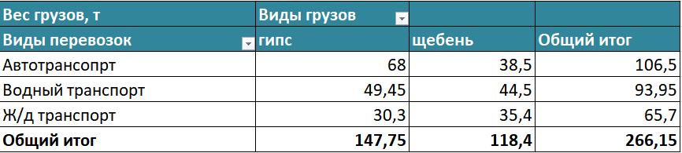
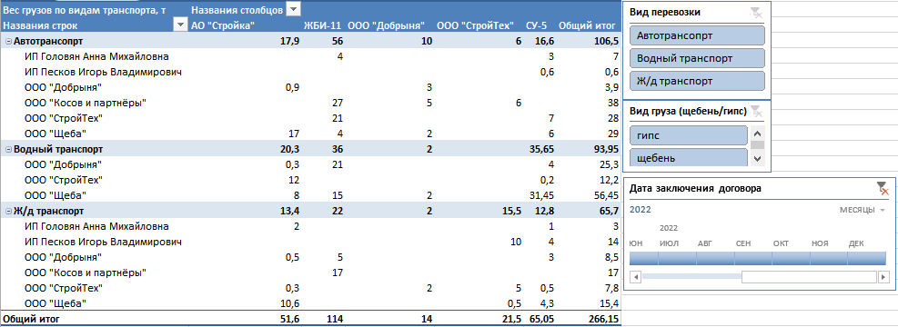
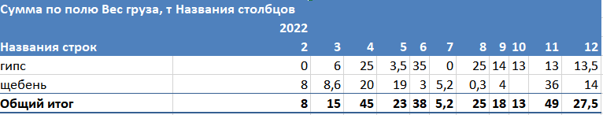
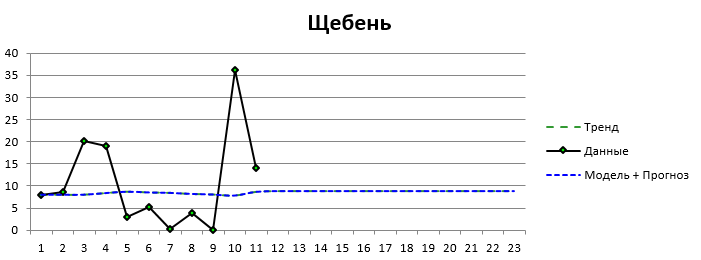
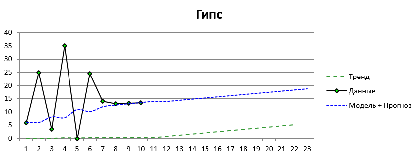

-
Источник
"Ханилища данных" — дисциплина в рамках которой выполнялась данная работа в 8 семестре бакалавра (первая половина 2023 года). Основным назначением лабораторной работы было ознакомление с технологией OLAP (Online Analytical Processing), которая заключается в подготовке суммарной информации на основе больших массивов данных, структурированных по многомерному принципу.Тематика задачи была поставлена преподавателем: логистическая компания оказывает услуги по транспортировке гипса и щебня в мешках. -
Цель и задачи
Цель: ознакомление с OLAP технологией посредством работы со сводными таблицами.В соответствии с заданиями лабораторной работы были поставлены задачи:
— построение сводных таблиц для анализа данных логистической компании
— построение сводных таблиц со срезами, временными шкалами и вычисляемыми столбцами для более глубокого и подробного анализа
— пострроение прогнозов на основе данных сводной таблицы с помощью надстройки Novo Forecast PRO. -
Методы
Сводные таблицы
Временные ряды -
Инструменты
Microsoft Excel
Надстройка Novo Forecast PRO для Microsoft Excel -
Результат
Полученный анализ предоставляет информацию о видах перевозки и их эффективности между различными компаниями. Также эти данные дают возможность прогнозировать стоимость доставки. При этом срезы дают возможность оценить частные случаи.Прогноз на следующий год показал рост объёма перевозок гипса при сохранении объёмов перевозки щебня. -
Скачать файл с проектом (ссылка)
-
Описание
В соответствии с тематикой и поставленными требованиями (не менее 10 столбцов) был сгенерирован с помощью функции Excel СЛУЧМЕЖДУ датасет, фрагмент которого представлен в таблице ниже. Любые совпадения сгенерированных данных с реальными компаниямии случайны.Поставщик Получатель Вид груза (гипс/щебень) Вид перевозки Вес груза, т Стоимость груза, руб Стоимость перевозки груза, руб Стоимость хранения груза на складе, руб Время хранения груза на складе, дни Кол-во единиц груза (мешков) Дата заключения договора Год заключения договора Месяц заключения договора ООО "Щеба" АО "Стройка" щебень Водный транспорт 8 100 000 7 800 47 509 10 40 01.02.2022 2022 2 ООО "Щеба" ООО "СтройТех" гипс Ж/д транспорт 0,5 15 000 10 000 51 065 7 10 31.05.2022 2022 5 ООО "СтройТех" ООО "Добрыня" гипс Ж/д транспорт 2 25 000 25 000 68 833 4 20 19.06.2022 2022 6 ИП Песков Игорь Владимирович СУ-5 щебень Ж/д транспорт 1 30 000 69 000 67 085 1 50 25.09.2022 2022 9 ... ... ... ... ... ... ... ... ... ... ... ... ... Для оттачивания навыков на основе исходных данных было построено ннесколько сводных таблиц. Пример таковой представлен справа. Из него видно, что гипс чаще всего перевозят автотранспортом, реже — водным, а щебень чаще водным, реже — автотранспортом. Железнодорожный используется реже остальных. Другие сводне таблицы размещены в файле с проектом.Пример сводной таблицы, отражающей перевозки в весе грузов между поставщиками и получателями по видам транспорта со срезами по видам перевозки и видам транспорта и временной шкалой, представлен слева. Этот пример показывает, что больше всего грузов получил ЖБИ-11 (114 тонн), основными его поставщиками являются ООО «Косов и партнёры» (44 тонны: 27 — автотранспортом, 17 — ж/д транспортом)Для прогнозирования объёмов перевозок гипса и щебня с помощью надстройки Novo Forecast PRO была построена сводная таблица (изображение ниже), в которой строками являлись виды грузов, а столбцами — годы и месяцы.После применеия надстройки Novo Forecast PRO были получены графики с прогнозом объма перевозок щебня (слева) и гипса (справа) на следующие 12 месяцев. Полученные графики размещены ниже. Так как даные взяты всего за один год, пронозировать в долгосрочной перспективе довольно сложно. Поэтому предсказание является довольно обобщённым, т.е. объём перевозок гипса будет расти, тогда как щебень останется на прежнем уровне.